SHOULDER WORKOUT EXERCISES
Shoulder Anatomy
No two people work out exactly the same. Whether it's choice and sequence of exercises, how many sets to complete of each move, how heavy to go and reps completed, length of rest periods, or advanced training techniques and finishing moves, each lifter has his or her own workout DNA.
Among the 9.5 million users of BodySpace, there are probably 9.5 million different shoulder workouts. Individuality can be a good thing, but certain principles make some routines better than others, especially for specific goals. So rather than present you with 9.5 million ways to train your delts등hich would make this article slightly time-consuming to read듈've whittled it down to seven really great ones, each with a unique training goal.
Pay especially close attention to how exercise choice and order, weight/rep targets, volume, and advanced-training principles can be manipulated to fine-tune a routine for a specific goal. If you find one you like, try it for 4-8 weeks, then go back to your regular workout or try another from the list.
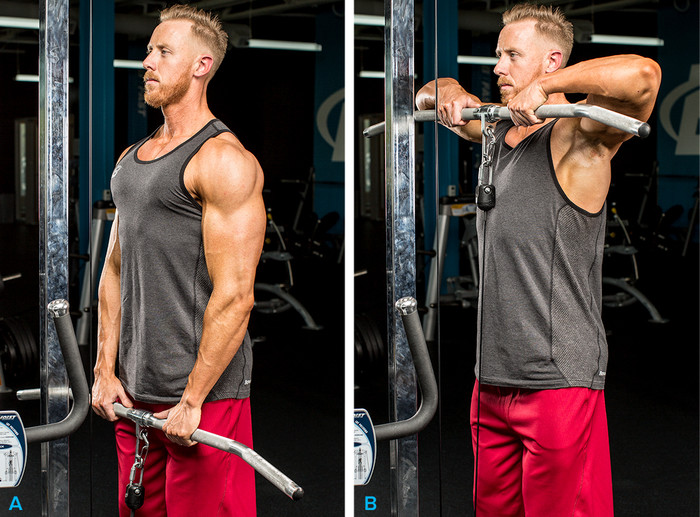
- These workouts don't include warm-up sets. Do as many as you need, but never take warm-ups to muscle failure.
- Choose a weight that allows you to reach muscle failure by the target-rep listed.
- If you have a spotter, do a few forced reps on your heaviest sets of overhead presses. If you don't have a partner, do a dropset on your last set of each exercise, reducing the weight by about 25 percent when you reach muscle failure and continuing on to a second point of muscle failure.
Shoulder Exercises
To build mass, always start your workout with the most demanding exercises듨ultijoint overhead presses, in the case of the delts등hich allow you to push the most weight. In this mass workout, a second multijoint move is next, followed by single-joint moves for each of the three delts heads: front, middle, and rear. This is the foundation for a solid mass workout. Keeping the total volume fairly high also promotes muscle growth.
You can make the workout more challenging in several ways. For the overhead press, start by using dumbbells, which are slightly more difficult to control and have a slightly longer range of motion than a barbell. We'll also follow a reverse-pyramid scheme, which allows you to take more total sets to muscle failure. For the first 2 sets, you'll use a fairly heavy weight for a low rep target듥ust 6듮o promote even greater strength gains than you might normally get when shooting for a slightly higher rep target. As you become increasingly fatigued, decrease the weight by about 5 pounds per side on subsequent sets. Finally, on your two heaviest sets, enlist a spotter who can provide you just enough help to keep the weight moving.
Because the front delts get so much work on chest day, and the middle delts take the brunt of the weight on overhead pressing moves, it's not uncommon for the rear delts to be the smallest드nd weakest듪f the three. In this workout, you'll do them before the other two, while you have a bit more energy in the tank. Feel free to rearrange the order of the single-joint moves based on your weaknesses, though. If you judge your delts to be fairly balanced, simply rotate the order of the single-joint movements from one workout to the next.
- Dumbbell Shoulder Press
- While holding a dumbbell in each hand, sit on a military press bench or utility bench that has back support. Place the dumbbells upright on top of your thighs
- Now raise the dumbbells to shoulder height one at a time using your thighs to help propel them up into position.
- Make sure to rotate your wrists so that the palms of your hands are facing forward. This is your starting position.
- Now, exhale and push the dumbbells upward until they touch at the top.
- Then, after a brief pause at the top contracted position, slowly lower the weights back down to the starting position while inhaling.
- Repeat for the recommended amount of repetitions.
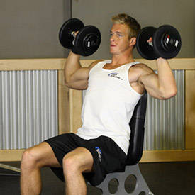
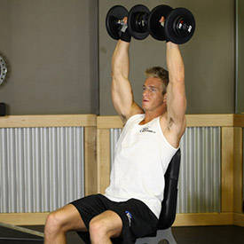
Variations:-
You can perform the exercise standing or sitting on a regular flat bench. For people with lower back problems, the version described is the recommended one.
You can also perform the exercise as Arnold Schwarzenegger used to do it, which is to start holding the dumbbells with a supinated grip (palms facing you) in front of your shoulders and then, as you start pushing up, you align the dumbbells in the starting position described on step 3 by rotating your wrists and touch the dumbbells at the top. As you come down, then you would go back to the starting position by rotating the wrist throughout the lowering portion until the palms of your hands are facing you. This variation is called the Arnold Press. However, it is not recommended if you have rotator cuff problems.
- Upright Barbell Row
- Grasp a barbell with an overhand grip that is slightly less than shoulder width. The bar should be resting on the top of your thighs with your arms extended and a slight bend in your elbows. Your back should also be straight. This will be your starting position
- Now exhale and use the sides of your shoulders to lift the bar, raising your elbows up and to the side. Keep the bar close to your body as you raise it. Continue to lift the bar until it nearly touches your chin. Tip: Your elbows should drive the motion, and should always be higher than your forearms. Remember to keep your torso stationary and pause for a second at the top of the movement.
- Lower the bar back down slowly to the starting position. Inhale as you perform this portion of the movement.
- Repeat for the recommended amount of repetitions.
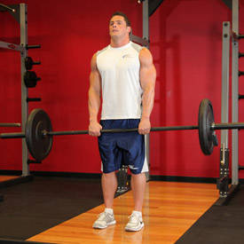
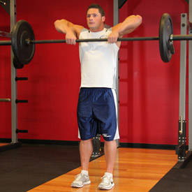
Variations:-
This exercise can also be performed using a straight bar attached to a low pulley and it can also be performed using dumbbells, though this later exercise should be reserved by people that are well familiarized with correct execution.
- Seated Bent-Over Rear Delt Raise
- Place a couple of dumbbells looking forward in front of a flat bench.
- Sit on the end of the bench with your legs together and the dumbbells behind your calves.
- Bend at the waist while keeping the back straight in order to pick up the dumbbells. The palms of your hands should be facing each other as you pick them. This will be your starting position.
- Keeping your torso forward and stationary, and the arms slightly bent at the elbows, lift the dumbbells straight to the side until both arms are parallel to the floor. Exhale as you lift the weights. (Note: avoid swinging the torso or bringing the arms back as opposed to the side.)
- After a one second contraction at the top, slowly lower the dumbbells back to the starting position.
- Repeat for the recommended amount of repetitions.
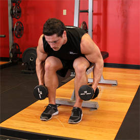
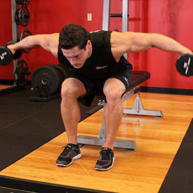
Variations
This exercise can also be performed standing but those with lower back problems are better off performing this seated variety.
- Side Lateral Raise
- Pick a couple of dumbbells and stand with a straight torso and the dumbbells by your side at arms length with the palms of the hand facing you. This will be your starting position.
- While maintaining the torso in a stationary position (no swinging), lift the dumbbells to your side with a slight bend on the elbow and the hands slightly tilted forward as if pouring water in a glass. Continue to go up until you arms are parallel to the floor. Exhale as you execute this movement and pause for a second at the top.
- Lower the dumbbells back down slowly to the starting position as you inhale.
- Repeat for the recommended amount of repetitions.
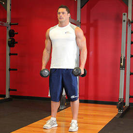
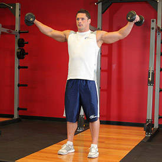
Variations:-
This exercise can also be performed sitting down.
- Standing Front Barbell Raise Over Head
- To begin, stand straight with a barbell in your hands. You should grip the bar with palms facing down and a closer than shoulder width grip apart from each other.
- Your feet should be shoulder width apart from each other. Your elbows should be slightly bent. This is the starting position.
- Lift the barbell up until it is directly over your head while exhaling. Make sure to keep your elbows slightly bent when performing each repetition.
- Once you feel the contraction, begin to lower the barbell back down to the starting position as you inhale.
- Repeat for the recommended amount of repetitions.
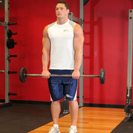
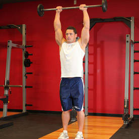
Variations:
This exercise can also be performed with dumbbells in each hand or by using a close or wide grip with the barbell. By alternating the widths of your grip, you will be able to contract different parts of the shoulders for an overall better physique.
- Machine Shoulder Press
- Sit down on the Shoulder Press Machine and select the weight.
- Grab the handles to your sides as you keep the elbows bent and in line with your torso. This will be your starting position.
- Now lift the handles as you exhale and you extend the arms fully. At the top of the position make sure that you hold the contraction for a second.
- Lower the handles slowly back to the starting position as you inhale.
- Repeat for the recommended amount of repetitions.
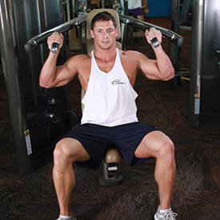
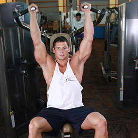
Variations:
You can use free weights (barbells and dumbbells) to perform this exercise on a military bench.